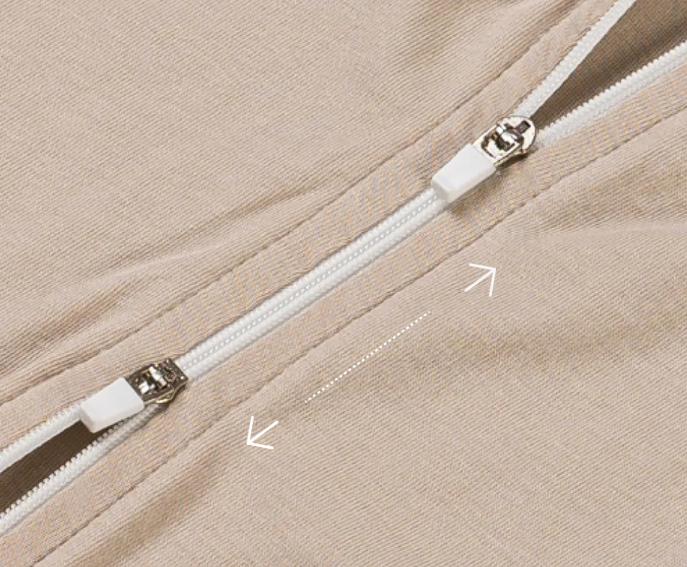
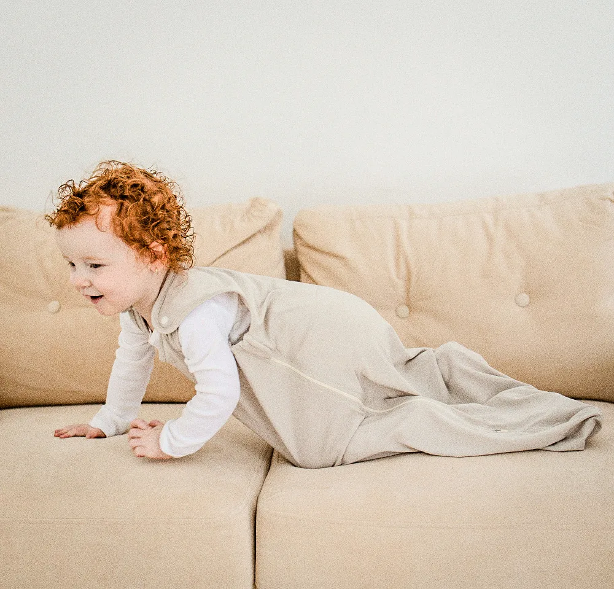

POINT 01
배앓이 걱정 그만!
답답하지 않은 편안한 아기바지
허리 전체를 부드럽게 감싸주는 허리밴딩은
탄성이 높은 고무줄이 아닌
엘라스틴 & 밤부 원단으로
아기가 편안함을 느끼게 해줍니다.

01
엘라스틴 & 밤부 허리밴딩
탄성이 높은 고무줄 대신 엘라스틴 & 밤부 원단으로 부드럽게 감싸줍니다.

02
배를 따뜻하게 감싸주는 두께감
최적의 두께감으로 배가 흘러내리지 않고 아기의 배를 따뜻하게 감싸줍니다.